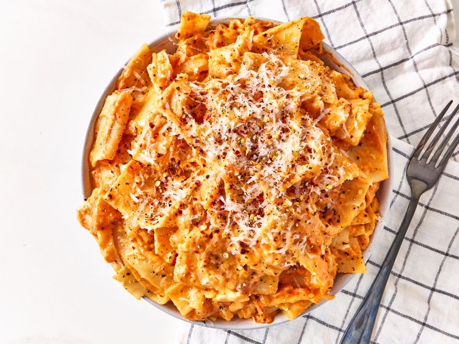

Home
Cheese Lasanga Sheet Pasta
Cheese Lasanga Sheet Pasta

This 3 ingredient cheesy lasagna sheet pasta could not be easier. Serve topped with Parmesan cheese, red pepper flakes, and freshly cracked black pepper if you like.
Ingredients
- 8 ounces lasagna noodles, broken in half
- 1 jar of Pasta Sauce
- 8 ounches of grated cheese
Steps
- Bring a large pot of lightly salted water to a boil. Cook lasanga noodles in the boiling water, stirring occasionally, until tender yet firm to the bite, 10 to 12 minutes.
- Strain noodles and return to the pot. Add pasta sauce and cook on medium heat until sauce is heated through, about 5 minutes.
- Add cheese and stir until cheese is melted. Serve immediately.